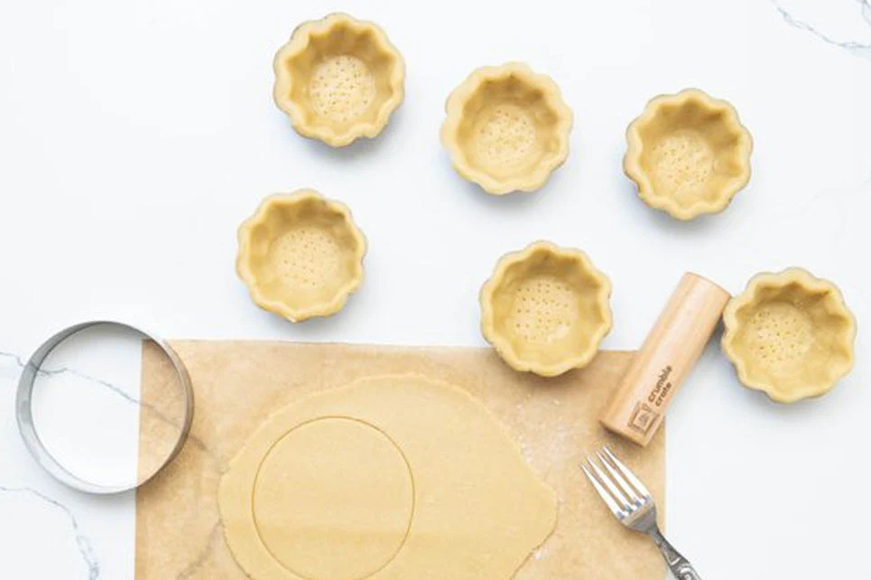

What Makes a Golden Crust Tartlet?
At The Golden Crust, each tartlet is crafted with precision. While flavors vary, every tartlet follows the same structural principles: a crisp shell, a focused filling, and a clean, intentional finish.

Core Components
- Crust: A thin, buttery shell baked to a crisp snap. The smaller size of a tartlet requires an even, delicate crust that supports the filling without heaviness.
- Filling: Smooth custards, creams, or fruit blends that highlight a single, clear flavor. Tartlet fillings are balanced and precise, rich enough to satisfy but never overwhelming.
- Topping: Minimalist garnishes chosen to reinforce the flavor identity, such as a single berry, a citrus curl, or a thin chocolate shard.
- Finish: A light glaze or subtle dusting that enhances appearance without adding weight. The finish is clean and understated, keeping the tartlet visually refined.
Learn More
Explore more about tart history, techniques, and variations: